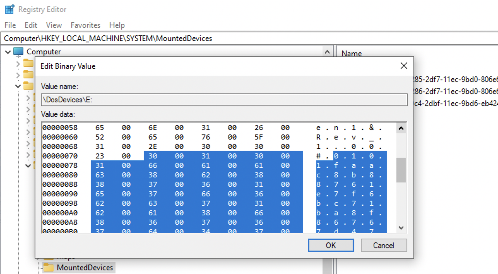
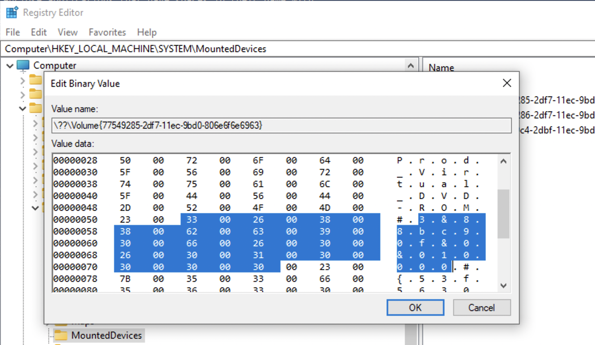

Windows
Are we looking for USB storage media activity or all USB devices? Like, cameras 📸? Headphones 🎧? As for the timestamps, you’ll usually have first (setupapi log) and last connected. There are also OS specific timestamps, like first or last install, first connect since reboot etc. Windows USB artifacts, macOS. See Event Manager’s codes 20001 and 20002 for USB events for verification or if the registry was updated. Look at HKEY_LOCAL_MACHINE\SYSTEM\CurrentControlSet\Control\DeviceClasses\ and HKEY_LOCAL_MACHINE\SYSTEM\CurrentControlSet\Enum\USB\<hardware id>\<instance id>\Device Parameters. More.
⚠️ On Windows, USB timestamps in registry will be updated when the registry itself gets update with a Windows update. Use Event Manager logs in these cases.
Look at HKEY_LOCAL_MACHINE\SYSTEM\CurrentControlSet\Control\DeviceClasses\ and HKEY_LOCAL_MACHINE\SYSTEM\CurrentControlSet\Enum\USB\<hardware id>\<instance id>\Device Parameters.
Attached devices
Key 🔑: Software\Microsoft\Windows Portable Devices\Devices. For USB and other devices connected. The sub-key name contains the device’s serial number, name, disk ID (between {}), which is assigned by OS. This disk id can be used to track the device accross the system, for example, other registry values. But keep in mind, that not every USB device has a serial number. Dates and times - when the device was first inserted after the last reboot. FriendlyName - user-created name of the volume.
Key 🔑: Software\Microsoft\Windows NT\CurrentVersion\EMDMgmt. It was put as an extension of memory (aka ready boost). Checks to see if the USB device can be used to extend memory. Timestamps - when first inserted. Some entries are ending with some decimal number, this is a volume ID in decimal (convert to hex and get your GUID that can be used to correlated data with USBSTR in SYSTEM hive, see below). These should be converted to hex and used to trace the device accross the system.
Key 🔑: Software\Microsoft\Windows NT\CurrentVersion\Print\Printers for printers connected. This subkey may also contains some SIDs. I don’t quite understand yet, when this happens in general, but one case is when OneNote is used to share documets.
⚠️ Use information about USB devices from
SYSTEMhive to get more and validate this information.
USBs
Key 🔑: System\ControlSet001\Enum\USBSTOR or ControleSet001\Enum\USB (on my Win10 VM)
Key 🔑: System\MountedDevices - used to map devices to drive letters (not only USBs).
Contains ever connected USBs with their serial numbers (if they have these) and some additional information. 0064 - first installed, 0065 last installed, 0066 last arrival and 0067 last removal. The full path: Computer\HKEY_LOCAL_MACHINE\SYSTEM\ControlSet001\Enum\USB\ROOT_HUB20\4&3af74d6&0\Properties\{83da6326-97a6-4088-9453-a1923f573b29}\. ⚠️ Note that ROOT_HUB20\4&3af74d6&0 is device specific, but {83da6326-97a6-4088-9453-a1923f573b29} is not.
⚠️ To view
Propertiessubkey admin 🧑💼 privileges are not enough for the live-registry. Install psexec and elevate to system by running the folling command from thepsexecfolder:.\PsExec.exe -i -s -d powershell.exe. In the PowerShell window that opens runregedit.
Device Parameters\PartMgr - gives a disk ID. PartitionTableCache may contains … surprise-surprise… a partition table! Wow… . For a GPT locate FF FF FF FF 00 00 00 00. 16 bytes right after that are for file system GUID. The next 16 bytes are unique volume GUID used to identify the volume accross systems as well as within one. It might be empty for a USB device. ContainerID - very important, can be used to filter event logs.
As for the MountedDevices… . If a device doesn’t have a serial number, it’ll be assigned a machine assigned number aka unique instance ID (not consistent accross multiple systems). If the second character is & - not a a serial number.
❓ How do I find it? Lot’s of gibberish is all I see…
✍️ Just find the device name, search for the
#sign, check after it and up until the next#right before a GUID contained withing{}.
This is an example of a USB device with a serial number that will be reletively unique (not all vendors borther giving each USB drive a separate serial number).

And here is an example of a machine assigned id. Note, that the second symbols is &.

The value that follows the serial number/uniqueid right after the second # and encolsed between {} is the disk id.
Logs
USBDevicesLogs: Path: C: \Windows\setupapi.log
USBDevicesLogs: Path: C: \Windows\inf\setupapi.dev. log
Mounted Devices
Key 🔑: NTUSER\MountPoints2.
If you connect volumes from a system-wide MountPoints (above) and USBSTR, we can connect a device to a specific user.
ManagedByApp
Key 🔑: Software\Microsoft\Windows\CurrentVersion\AppModel\SystemAppData\Microsoft.Windows.Photos_8wekyb3d8bbwe\PersistedStorageItemTable\ManagedByApp.
Tracks images opened with Microsoft application. Shows volume GUID (use other USB-related registry to assemble the picture), file path, data and time ⏰. LastUpdateTime shows when the files was … . This date and time is very close LastInteracted from ShellBags. Go to MountedDevices in SOFTWARE hive to find the device by the volume GUID and the to SYSTEM’s USBSTR -> PartitionTableCache.
This information is very useful for child abuse cases.
ShellBags
Key 🔑 : Local Settings\Software\Microsoft\Windows\Shell\BagMRU . Values: MRUListEx, NodeSlot, Subkeys.
Key 🔑 : Local Settings\Software\Microsoft\Windows\Shell\Bags. Values: Shell, will have folder’s GUID.
Created On: when the folder was created/moved/renamed. Last accessed and created are sometimes the same. Last modified is when the preferences were last changed (window resized, view options changed). Mind if it’s utc or gmt. Also, this data might be updated with a little lag. Last key write time is the ShellBag’s timestamp.
⚠️ Shortcuts MAC times are not updated!
⚠️ Fat16 only records date. No time. So the
Last accessedtime for a fat16 formatted folder will be00:00:00.000. It’s more usual for a USB removable media.
Created On, Modified On and Last accessed on are all FS timestamps ❗️❗️❗️ However, Registry last write time is its own timestamp and it seems to be updated even when no preferences were changed.
Track Windows folder settings (how the view is set), track zip files, folder access, even if information was deleted. Can also show folders on removable media. This data is a little bit confusing at first, but can be digested in a couple of minutes. One important thing to note is that both keys are interconnected. I’ve used arrows, squares and circles to mark data corresponding to each for better visualization on the picture below. Sometimes, additional info for NTFS filesystem will be available (MFT record number) and file system type as well, not always however.
⚠️ Proves that the user interacted with these folders if they are found in ShellBags but not on the system.
❓ How about when being hacked? A hacker might delete the folder.
Right under BagMRU subkey, there is only one subkey (in this case, in case of shell bags, a folder): 0. MRUListEx contains a list of folders inside this one identified by sequence numbers. In our example there are only three subfolders (and, hence, values in the list) in this folder: 00 00 00 00, just 0 in little-endian (green), 01 00 00 00, just 1 in little-endian (orange) and 02 00 00 00, just 2 in little-endian (purple). Above the MRUListEx there are three values in our case, each corresponding to the subfolder and containing a folder path and name. In the example below the 0 subfolder’s value is expanded and marked with a green circle.
Each of these folders in the list will have a corresponding subkey inside our 0 subkey/folder (marked with arrows on the left).

So, we have a parent folder info, what folders it contains and the paths to them. Now, since ShellBags store folder settings, where are they? Under the second subkey, Bags. But since sequence numbers are used here as well, how do we find the folder we need? Are these sequence number the same as on the picture above? The answer is no. On the picture above numbering restarts from 0 for each folder’s subfolders, so that each folder that has at least one subfolder, will have at least 0 value and a 0 subkey. However, the Bags subkeys numbers folders sequencially. Each subkey representing a folder in a BagMRU subkey we’ve seen above, will have a value NodeSlot. This is a number it’s identified by withing Bags subkey. See the below example for the folder 0.

🛠 ShellBagsExplorer (E. Zimmerman) is a tools that helps automating this process which is useful for larger amount of data.

The above is an example of the ShellBagsExplorer for my Windows 10 Parallels VM. Pretty user-friendly representation and lot’s of valuable information. Note the folders on the very top: \\Mac\vm, \\Mac\Home and \\Mac\AllFiles. Someone who is using Paralells Windows 10 on Mac might note this at once, that this is a VM running on a Mac. Also, both \\Mac\Home and \\Mac\AllFiles are no longer available for Windows 10, but they were not deleted from the registry as you may see. That’s because when folders are deleted, they are not deleted from here, at least not soon.
Event Logs
Security 6416: A new external device was recognized by the system
Event ID 219 is logged when a device is plugged into a Windows-based system
Plug’n’Play
By default, the SetupAPI text logs are located in the %SystemRoot%\Inf directory.
To enable event categories for the SetupAPI logs, create (or modify) the following REG_DWORD registry value:
HKEY_LOCAL_MACHINE\Software\Microsoft\Windows\CurrentVersion\Setup\LogMask. More here.
macOS
USB
On a macOS - tracev3 log file contains this information. On macOS remember about 0x5ac Vendor ID! Check for the USB info using its GUIDs: https://the-sz.com/products/usbid/.
⚠️ Keep in mind that a lot of cheap USB drives might have the SAME serial number!!!
Also, FSEvents can give you a lot of information. Tools 🛠: FSEventsParser.
Lots of devices that are in fact built-in into the Mac, are considered as external connection by tracev3 log files. So, if you see the 0x5ac vendor id in the logs, it might be the keyboard or trackpad.
To read: https://medium.com/@kieczkowska/usb-forensics-101-444faf737c4c
usbmuxd.plist
Also gives the uid of the user and group responsible for USB mount.
plutil -p "./Volume 0/root/private/var/db/dslocal/nodes/Default/users/_usbmuxd.plist"
plutil -p "./Volume 0/root/private/var/db/dslocal/nodes/Default/groups/usbmuxd.plist"
``
The file structure:
{
"generateduid" => [
0 => "FFFFEEEE-DDDD-CCCC-BBBB-AAAA000000D5"
]
"gid" => [
0 => "213"
]
"home" => [
0 => "/var/db/lockdown"
]
"name" => [
0 => "_usbmuxd"
]
"passwd" => [
0 => "*"
]
"realname" => [
0 => "iPhone OS Device Helper"
]
"shell" => [
0 => "/usr/bin/false"
]
"uid" => [
0 => "213"
]
}
{
"generateduid" => [
0 => "ABCDEFAB-CDEF-ABCD-EFAB-CDEF000000D5"
]
"gid" => [
0 => "213"
]
"name" => [
0 => "_usbmuxd"
]
"passwd" => [
0 => "*"
]
"realname" => [
0 => "iPhone OS Device Helper"
]
}
Then, cd here /private/var/db/dslocal/nodes/Default/users and /private/var/db/dslocal/nodes/Default/groups run grep -r for either gid or uid mentioned above and get the user/group.
0x5ac
Apple’s vendor ID.
tracev3
/private/var/db/diagnostics/Persist/*****.tracev3 binary log file. See the eForensics magazine for more information. For example, 000000000000057b.tracev3. Contains connection start times, vendor ID, product ID.
system.log
Another place to look for USB connections. Use grep -r usbmsc.
⚠️ Keep in mind that a lot of cheap USB drives might have the SAME serial number!!!
com.apple.finder.plist
Full path to the artifact: /Users/<username>/Library/Preferences/com.apple.finder.plist.
🔍 Not on my Mac!
FSEvents
Mount, Unmount, Volume. See here to know more about this artefact.
Daily.Out log
/private/var/log.daily.log.
Unified Log
Keywords: USBMC, Manufacturer.
Lockdown folder
Cryptogrphic keys to connect to pair other devices (https://blog.elcomsoft.com/2018/07/accessing-lockdown-files-on-macos/).
/private/var/db/lockdown/
AirDrop
Since OX Lion (10.7) and iOS 7.